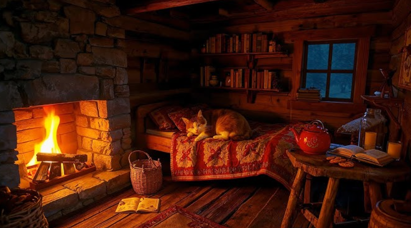

Decides que Mike debe buscar refugio en la cabaña.
Mike corre y corre hacia la cabaña, con una velocidad que ni él se imaginaba posible.
Después de unos minutos que parecían eternos, Mike llega a la cabaña, con el animal salvaje a pocos metros de él. Mike se
esconde debajo de la cabaña, sabiendo que el animal no puede entrar allí. El animal se queda afuera, gruñendo y arañando la madera,
pero no puede hacer nada para lastimar a Mike.
Un hombre sale de la cabaña, espantando al animal salvaje, quien sale corriendo de regreso al bosque.
Mike sale de su refugio debajo de la cabaña. El hombre se percata de su presencia y lo invita a entrar a la cabaña.
Mike, emocionado, acepta la invitación y entra a la cabaña con el hombre y su familia.
Fin.